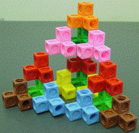

| Purpose To illustrate physically a recursive process for building fractals; |
| to measure perimeters, areas, and volumes of these fractals; |
| to illustrate the relation between measure and dimension. |
Materials 216 building blocks
Background on dimensions and the relationship between dimension and measure
Procedure for constructing the 3 block, 4 block, and 5 block models
Sample computing the perimeter, area, and volume of the 3 block model
Exercise computing the perimeter, area, and volume of the 4 and 5 block models.
| Conclusion Measure and dimension are very closely related. |
| Measuring in too low a dimension gives an infinite result in the limit; |
| measuring in too high a dimension gives zero in the limit. |
| Measure is more subtle still, because even when the correct dimension is known, finding the measure in that dimension can be quite difficult. |